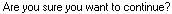

from sikuli import * import logging import myTools import client_Create import ba__Common import ba__ReviewBills # - - - - - - - - - - - - - - - - - - - - - - - - - # def fProgressActivity_Setup1(): # - - - - - - - - - - - - - - - - - - - - - - - - - # myTools.sectionStartTimeStamp("ba ProgressAct1") logging.debug("ba ProgressAct1") # open client type("i",KeyModifier.CTRL) time.sleep(1) type("BA-ProgressAct") type(Key.ENTER) time.sleep(1) # get to arrangement field for time ba__Common.fMoveto_BAPage() myTools.pressTAB(4) # switch to Progress type(Key.HOME) myTools.pressDOWN(12) # enter details type(Key.TAB) type(Key.ENTER) time.sleep(1) type(Key.DOWN) time.sleep(1) type("o",KeyModifier.ALT) type("500") time.sleep(1) type(Key.ENTER) time.sleep(1) type(Key.ENTER) # save and close type("s",KeyModifier.CTRL) type(Key.F4,KeyModifier.CTRL) time.sleep(1) type(Key.F4,KeyModifier.CTRL) myTools.sectionEndTimeStamp() # - - - - - - - - - - - - - - - - - - - - - - - - - # def fProgressActivity_Setup2(): # - - - - - - - - - - - - - - - - - - - - - - - - - # myTools.sectionStartTimeStamp("ba ProgressAct2") logging.debug("ba ProgressAct2") # open client type("i",KeyModifier.CTRL) time.sleep(1) type("BA-ProgressAct") type(Key.ENTER) time.sleep(1) # get to arrangement field for time ba__Common.fMoveto_BAPage() myTools.pressTAB(5) # enter details type(Key.ENTER) time.sleep(1) type(Key.DOWN) time.sleep(1) type("o",KeyModifier.ALT) type("600") time.sleep(1) type(Key.ENTER) time.sleep(1) type(Key.ENTER) # save and close type("s",KeyModifier.CTRL) time.sleep(1) if int(Settings.tsVersion) > 2014: if exists(): type("y",KeyModifier.ALT) type(Key.F4,KeyModifier.CTRL) time.sleep(1) type(Key.F4,KeyModifier.CTRL) myTools.sectionEndTimeStamp() # - - - - - - - - - - - - - - - - - - - - - - - - - # def fProgressActivity_Setup3(): # - - - - - - - - - - - - - - - - - - - - - - - - - # myTools.sectionStartTimeStamp("ba ProgressAct3") logging.debug("ba ProgressAct1") # open client type("i",KeyModifier.CTRL) time.sleep(1) type("BA-ProgressAct") type(Key.ENTER) time.sleep(1) # get to arrangement field for time ba__Common.fMoveto_BAPage() myTools.pressTAB(5) # enter details type(Key.ENTER) time.sleep(1) type(Key.DOWN) time.sleep(1) type("o",KeyModifier.ALT) type("700") time.sleep(1) type(Key.ENTER) time.sleep(1) type("u",KeyModifier.ALT) type(Key.DOWN) type(Key.ENTER) # save and close type("s",KeyModifier.CTRL) time.sleep(1) if int(Settings.tsVersion) > 2014: if exists(): type("y",KeyModifier.ALT) type(Key.F4,KeyModifier.CTRL) time.sleep(1) type(Key.F4,KeyModifier.CTRL) myTools.sectionEndTimeStamp() # - - - - - - - - - - - - - - - - - - - - - - - - - # def fProgressActivity(): # - - - - - - - - - - - - - - - - - - - - - - - - - # # create a new client client_Create.fCreate_Client("BA-ProgressAct","BA-ProgressAct","Progress Activity FF","Progress Activity FF","Progress Activity FF") # create some slips ba__Common.fCreate_BASlips("BA-ProgressAct") # set up billing arrangement fProgressActivity_Setup1() # print a bill to text ba__Common.fPrint_BABill("BA-ProgressAct",1) # compare at bill values ba__ReviewBills.fReview_BABill("BA-ProgressAct1") # create some slips ba__Common.fCreate_BASlips("BA-ProgressAct") # set up billing arrangement fProgressActivity_Setup2() # print a bill to text ba__Common.fPrint_BABill("BA-ProgressAct",2) # compare at bill values ba__ReviewBills.fReview_BABill("BA-ProgressAct2") # create some slips ba__Common.fCreate_BASlips("BA-ProgressAct") # set up billing arrangement fProgressActivity_Setup3() # print a bill to text ba__Common.fPrint_BABill("BA-ProgressAct",3) # compare at bill values ba__ReviewBills.fReview_BABill("BA-ProgressAct3")